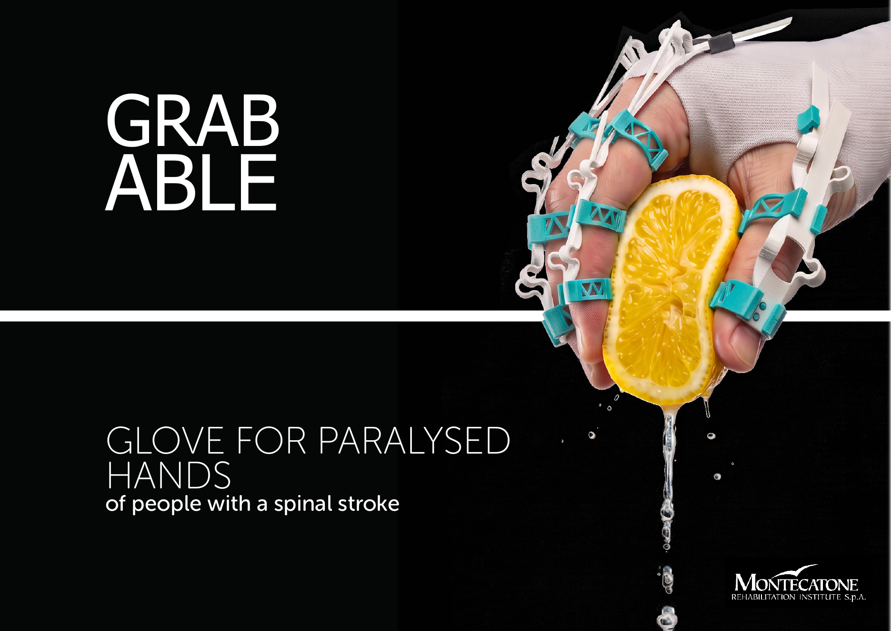
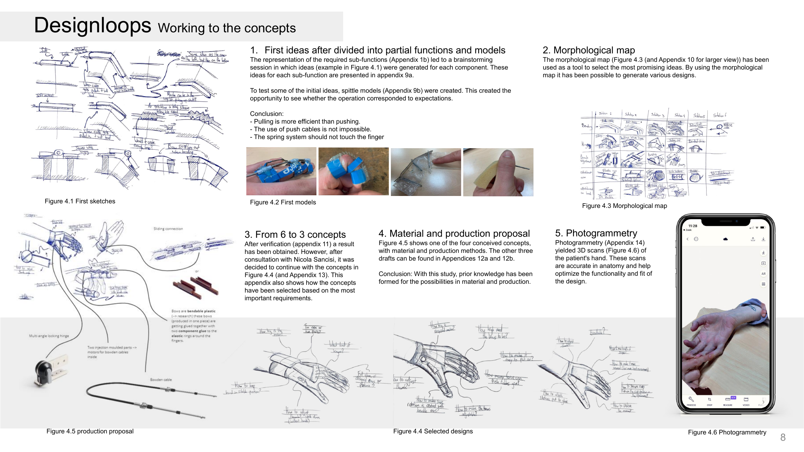
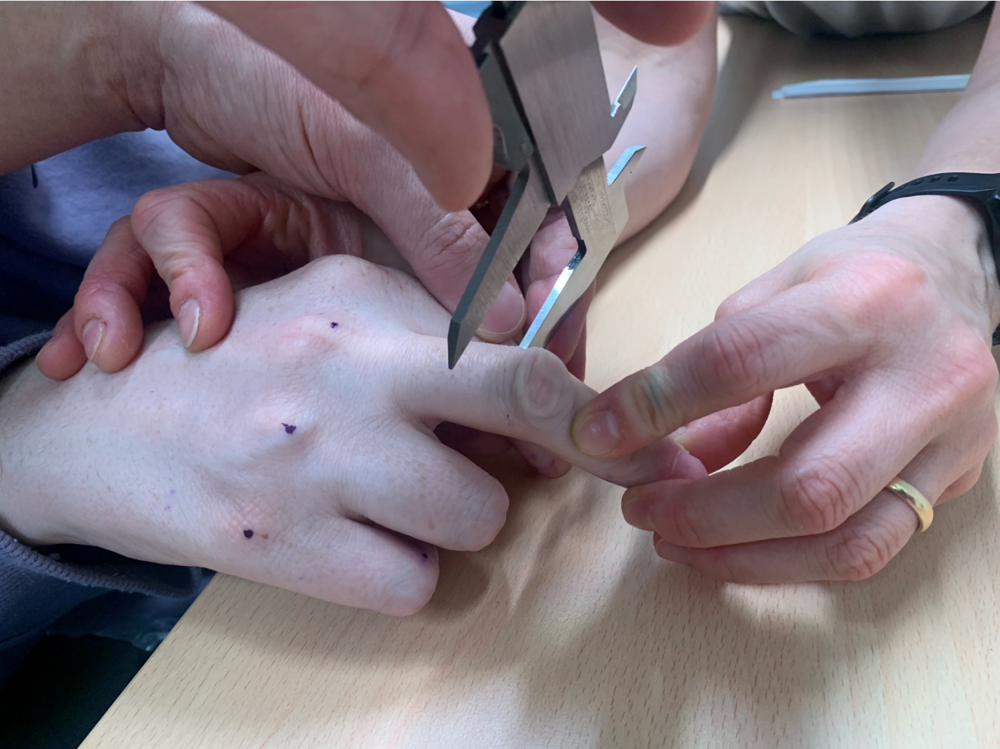
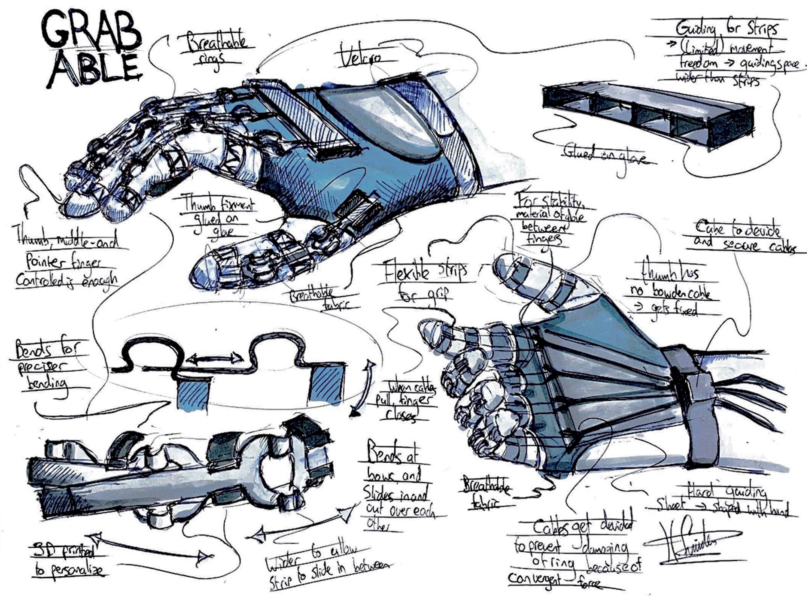

2023 · Graduation project
Grabable
An adjustable hand exoskeleton that supports grasping for people with hand paralysis after a spinal stroke.
Making grasping
more reachable.
Grabable was developed with the University of Bologna and the Montecatone Rehabilitation Institute. The project explored a more affordable, adjustable hand exoskeleton for a person with a spinal stroke.
The design guides the fingers through a bending motion and lets them return to rest without additional power. It was shaped around the changing fit and practical needs of a real rehabilitation setting.
Starting with
the hand.
Measurements and observations at the rehabilitation institute made the individual hand the starting point for the design. They informed the fit, joint locations and possible movement paths before a wearable prototype was made.
The early work moved between sketches, quick physical models and a morphological map to compare mechanisms before selecting directions to develop.


From hand scan
to hospital test.
- Used photogrammetry and 3D-printed hand models to test fit and motion without burdening the patient.
- Developed and compared compliant-hinge and sliding flexure concepts for guided finger movement.
- Tested the prototype with nurses and a patient at the rehabilitation institute.
The final
direction.
The final sketch brings the chosen elements together: adjustable finger strips, guided sliding sections, a stable hand surface and a separate thumb mechanism. The structure leaves the palm as open as possible while supporting a controlled grasp.

What the
prototype proved.
Nurses could fit the prototype without further instruction. The fingers returned to a resting position, the bending mechanism worked, and thumb splinting supported grasping.
Further work focused on larger-object grasping, finger-specific stiffness and more precise size adjustment.